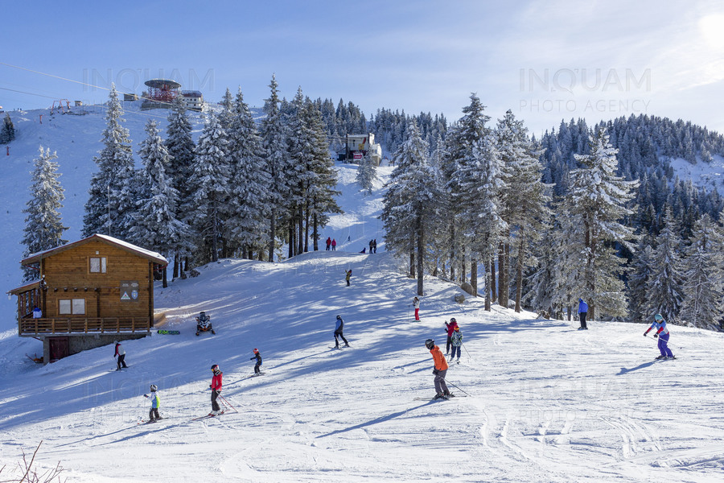
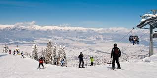

Aceste secțiuni vor cuprinde o serie de tehnici și de sfaturi pentru a învăța minunata artă a schiatului.
Secțiunea 1
Întâi vom începe cu niște informații adiționale:
Data și ora curentă:
Adresa URL este:
Locația curentă este:
Numele și versiunea browserului folosit sunt:
Sistemul de operare folosit:
Sunteți prima oară la schi – cum să te pregătești?
Înainte de a începe sezonul de schi, ar trebui să fim pregătiți fizic pentru el. Acest lucru este valabil pentru toată lumea, nu numai pentru începători.
Cel mai bine este să începi un plan de antrenament cu câteva luni înainte de excursie planificată, care presupune exerciții fizice de 3 ori pe săptămână timp de aproximativ 45 - 60 de minute.
Să ne concentrăm pe cele mai importante părți: mușchii picioarelor, abdomenului, mușchii centurii sub-abdominale, mușchii brațelor, mușchiului extensor al spatelui, precum și asupra articulațiilor șoldului,
genunchilor și gleznei. Apoi, cu 2 săptămâni înainte de a merge la pârtie, să creștem frecvența antrenamentelor la 4 sau chiar 5 pe săptămână. Include antrenamentul de încălzire, cardio, aerobic și de forță.
Secțiunea 2
Mai întâi, vom începe cu un mic joculeț.
Apăsați de două ori cu mouse-ul, în puncte diferite, în chenarul de mai jos, și se va desena un dreptunghi. De asemenea, se poate alege culoarea de fundal și culoare de chenar.
Câteva imagini de pe pârtii


Ce să luați la schi? Lista cu echipamentele, îmbrăcămintea și accesoriile necesare
Atunci când facem bagajele pentru prima excursie la schi, trebuie în primul rând să ținem cont de ținuta de schi adecvată. Veți avea nevoie de:
Un strat suplimentar izolator, de ex. O jachetă din material tehnic sau din lână de merinos
Geacă de schi sau salopetă
Pantaloni de schi
Căciulă sub cască
Mănuși de schi
De asemenea, veți avea nevoie de echipament care se potrivește înălțimii, greutății și nivelului vostru de calificare.
Chiar dacă nu doriți să-l cumpărați încă, merită să aflați mai multe despre el de la specialiști într-un magazin profesionist și apoi să închiriați:
Schiuri alese individual cu sistem de închidere adecvat
încălțăminte de schi (pentru începători se recomandă modelele moi. Merită să te obișnuiești cu ele înainte de sezon, ca să se rodeze „pe uscat”)
Cască de schi
Bețe de schi
Gogle de schi
Pot fi necesare accesorii suplimentare:
Cremă cu filtru și ochelari de soare cu polarizare – esențial în zilele însorite de pe pârtii, când soarele se reflectă în zăpadă și vă poate răni ochii sau vă poate arde pielea
cremă pentru febră musculară
Huse și rucsacuri pentru echipament – ușurează transportul tuturor echipamentelor de la mașină la pârtie, care uneori este departe de parcare
Batoane energizante sau ciocolată neagră ca o gustare rapidă în timpul antrenamentului
Secțiunea 3
Încă o sesiune interactivă. Tabelul de mai jos îl putem modifica după bunul plac. Putem adăuga noi linii și noi coloane în ce poziție a tabelului dorim.
Locație
Activitate
Preț
Durată
Sinaia
Ski
30 lei
1 h
Cavnic
Ski
50 lei
2 h
Predeal
Snowboard
50 lei
1:30 h
Predeal
Tubing
40 lei
1 h
Prima coborâre pe pârtie
Începătorii sunt sfătuiți ca prima dată când se dau pe pârtie să găsească întâi o porțiune dreaptă de zapadă, pe care să exerseze primele mișcări.
Fără a ridica picioarele de pe zăpadă, aceștia trebuie să se obișnuiască întâi cu sentimentul și să schieze ușor, în față și în lateral, cu fiecare picior pe rând.
În momentul primei coborâri pe pârtie, este foarte important să țineți capul sus, pentru a vedea mereu în ce direcție vă îndreptați.
După câteva împingeri în bețe, veți începe să prindeți puțină viteză, iar când doriți să vă opriți lăsați zăpada să vă încetinească în mod natural.
De asemenea, un lucru foarte important este să nu vă uitați în jos în timpul schiatului, existând pericolul să vă pierdeți echilibrul.